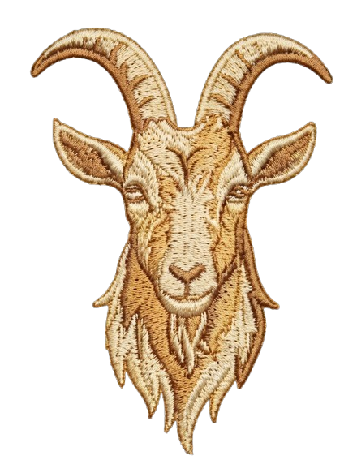
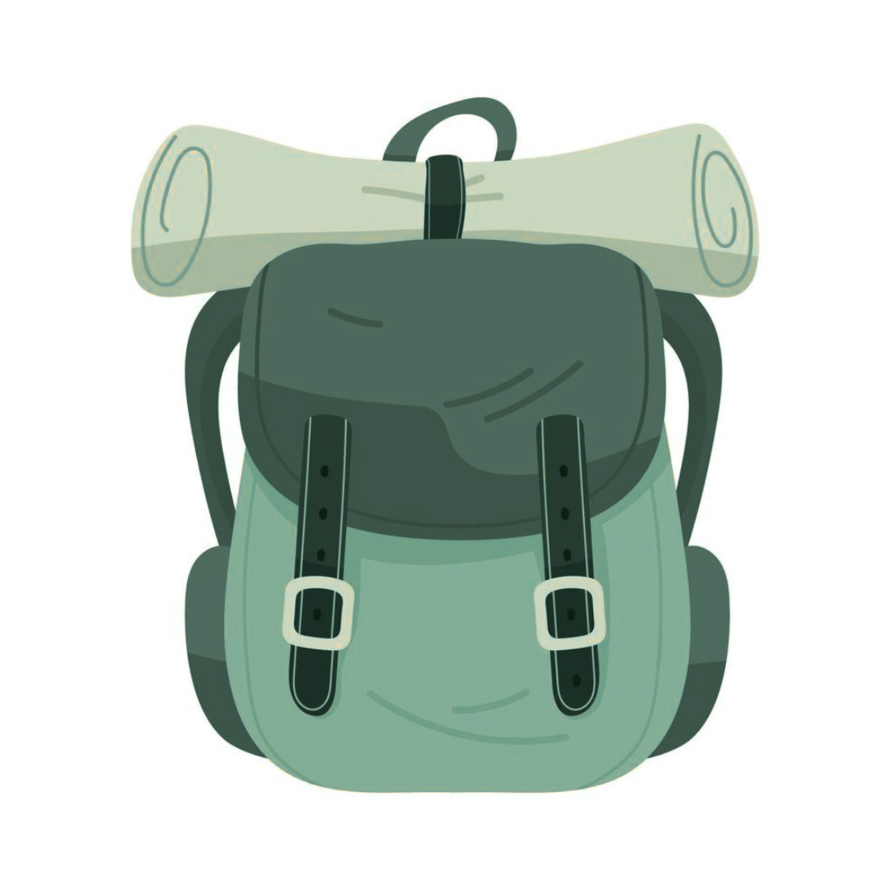
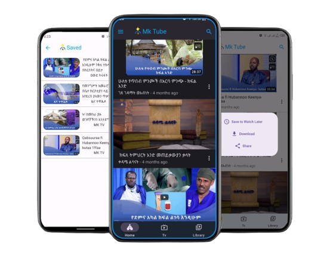

Reliability by design
Build services that handle failure and scale with care.
Software Engineer · CS Graduate · Goat
I’m a software engineer interested in AI research in and in building technology that creates meaningful impact. I enjoy working across product and engineering, from practical AI to reliable digital systems.

Software Engineer · Goat01 / About
I’m a software engineer with a strong interest in artificial intelligence, research, and building technology that solves real-world problems.
My experience spans software products, financial technology, and AI-powered applications. At EagleLion Group, I contribute to large-scale financial and digital products mainly using Go, with experience designing backend services and building systems that need to be reliable at scale.
Alongside engineering, I’m increasingly interested in AI research, particularly in areas that can have an impact in Ethiopia and other communities with limited access to technology. I’m especially interested in practical AI systems that address problems that are often overlooked by mainstream research.
I also enjoy teaching and mentoring. I’ve taught algorithms and problem-solving, and mentored aspiring developers. I believe teaching is one of the best ways to grow while helping others grow too.
Explore my experience ↘Build services that handle failure and scale with care.
Make language technology more relevant to local communities.
Teach, mentor, and make technical ideas easier to access.
02 / Areas of focus
From dependable services to AI and education, I like work with a clear purpose.
01 — Engineering
Designing and building reliable software, from product features and APIs to scalable systems.
↗02 — Research
Exploring AI research for communities with limited access to technology.
↗03 — Community
Algorithms, software engineering, and practical support for developers building their skills.
↗03 / Experience
EagleLion Group
Working on backend services for fintech applications.
Building Go services and REST APIs, moving selected workflows to Kafka, working with PostgreSQL and MongoDB, and improving security, logging, and observability across different critical services.
A2SV
Led data structures and algorithms lectures and practice sessions for 30+ students while providing biweekly one-on-one mentorship to 12 students.
04 / Selected projects
Software and AI products shaped by local needs and designed for meaningful impact.


Currently exploring
Researching practical AI for Ethiopia, exploring Ethiopian language NLP, and building useful software products shaped by real needs.
Connect with me06 / Background
Education, technical skills, and community work.
Education
Engineering toolkit
Teaching & community
07 / Let’s work together
I’m open to software engineering opportunities, AI research collaborations, open-source projects, and mentoring. If you’re building useful software or researching on AI, let’s connect.
Email me